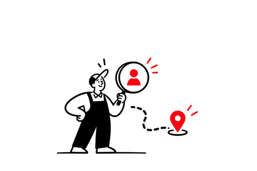
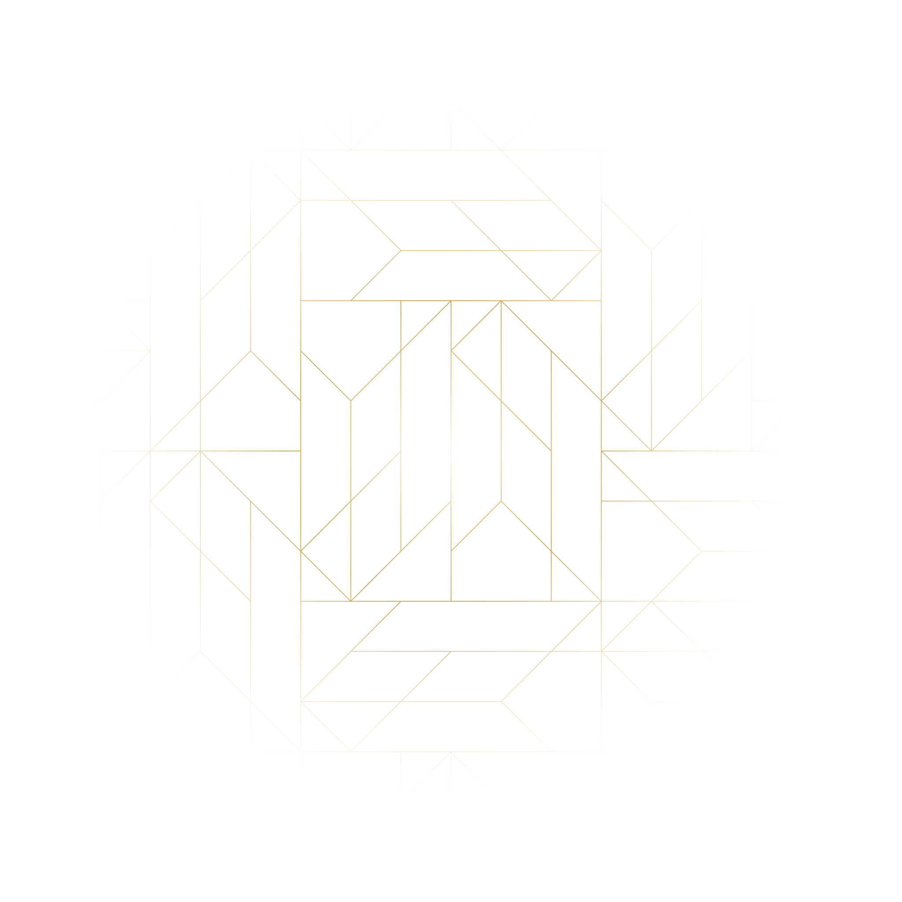
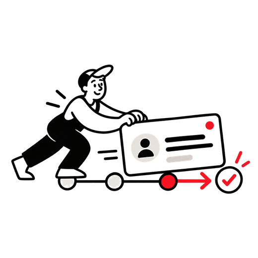
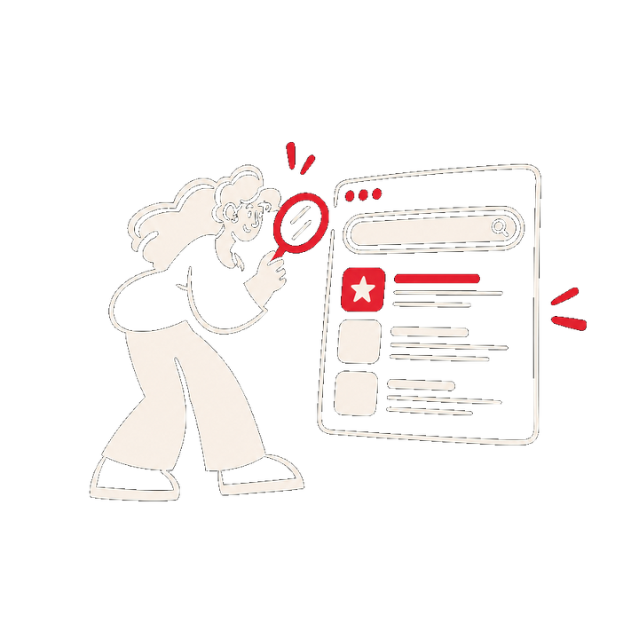
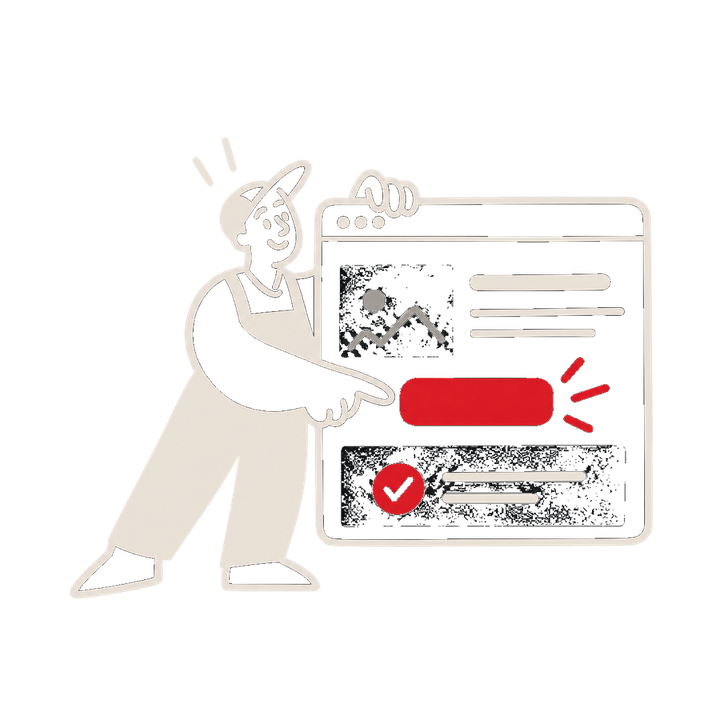
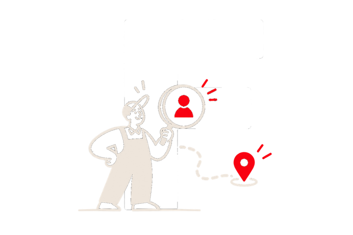
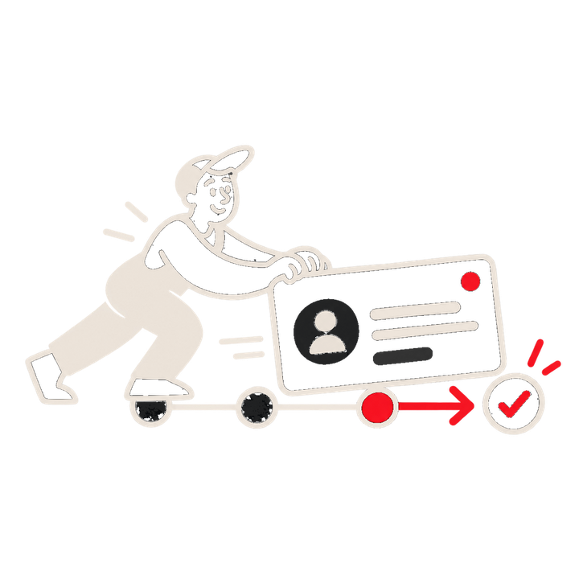

Be found by the
right people.
Pages built for the searches that end in work.

Your website, search and follow-up were never joined up. That gap is where enquiries go missing. I find it and close it.
31,625
Recorded search impressions
9
Recorded call actions
12
Days in the measured window
1
Connected route, page to CRM
Recorded platform events. Not confirmed sales, bookings or qualified leads.
The outcome

Pages built for the searches that end in work.
One obvious next step, easy to take on a phone.

One inbox, an owner, a written next step.
Website, rankings, forms, phone, CRM. None of them built to hand over to the next.
01. Search
Five steps. Four handovers. The handovers are where the money goes.




Someone types the problem you solve into Google. They land on a page and decide, in seconds, whether to call. They call, message or fill in a form. It goes somewhere. Somebody has to own it and move it forward. What happened next tells you what to fix first.
Website
✕Built before the search was known
✓Planned around the search
SEO
✕Rankings pointed at a page that can’t convert
✓Aimed at pages built to convert
Contact
✕One inbox, a WhatsApp nobody owns
✓Every route lands in one place
Follow-up
✕Depends on someone remembering
✓Written step, named owner
Reporting
✕Dashboards that disagree
✓One journey, recorded end to end
Reviews
✕Asked when someone has time
✓Asked inside the follow-up
Five stages. Start with the one that is costing you enquiries.
01 / Discover
Search work aimed at the searches that end in work.
02 / Convince
Pages that answer the objection before the call.
03 / Capture
Call, form or WhatsApp. One place it arrives.
04 / Follow up
A stage, an owner, a reminder.
05 / Improve
Recorded evidence decides what changes next.
Written for the search a customer really makes.
Form, call and message routes in one place.
A stage for every enquiry, next step written down.
Recorded events you can open yourself.
Roofing · 90 days · Search Console
31,625
organic search impressions
84 page × query combinations
Pages shown for the searches they were built for.
Home improvement · 12 days · Ads
9
recorded phone-call actions
1 landing page, tracked against spend
The call route was live and measured.
The connected route
Search or website✓
Service page✓
Call or form✓
CRM stage✓
Team notified✓
Every step exists and can be checked.
Recorded platform events. Not confirmed sales, bookings or qualified leads. No guarantee on rankings, enquiries or revenue.
01
No account manager in between.
02
Not a package.
03
Deliverables and cost, before work starts.
04
Evidence decides what changes next.

A note from the founder
Almost every business I meet already has a website, some rankings, a form, maybe a CRM. Nobody joined them up.
So I walk the journey the way a real enquiry does: first search, first page, first message, first reply. Where it breaks is usually obvious within an hour.
Fix the route first. Then grow traffic into it.
Abhishek Manjhi
Founder, Uplof
Start with one. The proposal defines the rest.
One programme, not three invoices.
Kept accurate for local discovery.
Built to be found and to convert.
Nothing arrives somewhere unchecked.
Your team can edit without breaking it.
Stages, owners, reminders.
Events that matter. No vanity charts.
Asked inside the follow-up.
Evidence decides what changes.
Probably a fit if one of these sounds familiar.
Your site, your rankings, how enquiries reach you. Ten minutes.
A straight read on where it breaks.
Scope first. Every connection tested.
Recorded events decide what changes next.
I connect the parts of your lead journey: search visibility, the page someone lands on, how they contact you, and what happens after. It starts with an audit of where that journey breaks.
Yes, and most people do. Usually the page or the follow-up route. The audit tells you which part is costing you enquiries first.
Technical fixes, on-page and service content, local search and Google Business Profile, and recorded reporting on the search terms your pages appear for.
Often not. If your current site can be adjusted to take an enquiry properly, that is the faster and cheaper route. A rebuild is recommended only when the structure is the blocker.
Yes, where the platforms allow it. The aim is to use what you already pay for and route it into one place your team checks.
Cost depends on scope. The proposal defines deliverables and ongoing work before anything begins. Contract length is agreed up front, with clear boundaries on both sides.
It depends on your starting point and which part gets fixed first. Route and follow-up changes usually show in recorded events sooner than search visibility does.
No. What I share is recorded evidence of what changed: platform events, not confirmed sales, bookings or qualified leads.
Not the focus of this work. The route from search to follow-up is.
Free first audit. Send your site, I’ll walk the journey and show you where it breaks.
No obligation. I just look.
Thanks. It has landed in my inbox and a confirmation is on its way to your email. I reply within one working day.
Need it sooner? Call +91 77108 94943 or message on WhatsApp.
Handled by Uplof directly. WhatsApp is there if you’d rather start that way.
Call Abhishek on +91 77108 94943.